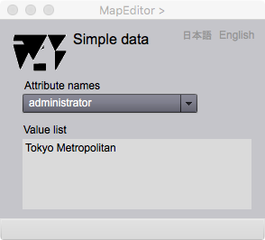

Simple Data Viewer
単純データ表示
単純データとは，一般的に単純データ型と呼ばれるタイプのデータをさします．Gittok ではブール値 (Bool)，整数 (Integer)，実数 (Real)，そして文字列 (Character string)がこれに当たります．この Viewerでは，単純データ型をとる地物属性を表示します．
Simple Data Viewer

図１．単純データの表示
List Viewerで，リストの中から地物インスタンスを選択し，単純データ型をとる地物属性を指定すると，このViewerが表示されます．
Fields
Attribute names (選択可能）
属性名のドロップダウンリストが表示されるので，どの属性を表示するか，ここで選択します．
Value list
選択された属性の値が表示されます．多重度がある場合は，複数の値の一覧が表示されます．
Buttons
日本語
今あなたが読んでいるドキュメントが表示されます．
English
You can read the tutorial written in English.